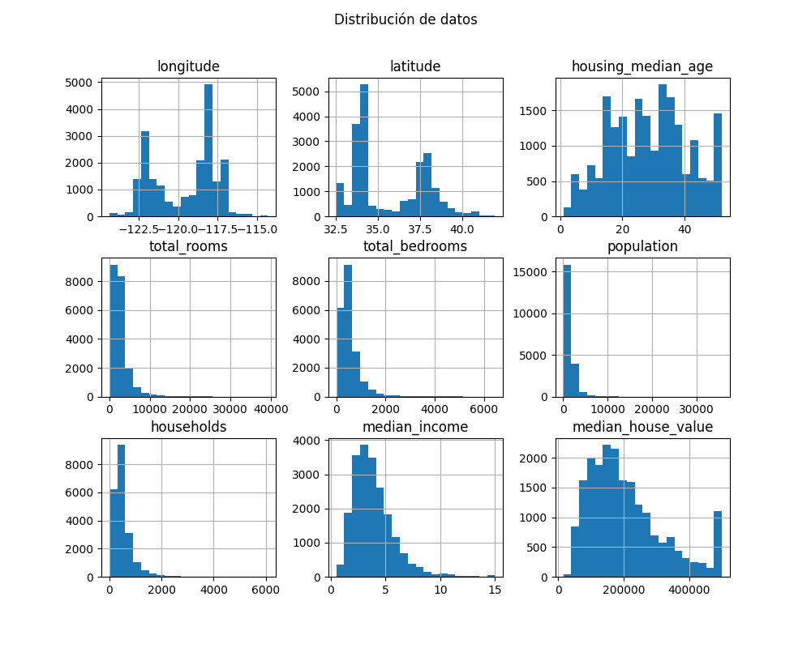

Descripción del Proyecto
Este proyecto carga un dataset, realiza un análisis exploratorio y predice valores utilizando regresión lineal.
Código
import pandas as pd
import matplotlib.pyplot as plt
from sklearn.linear_model import LinearRegression
# Cargar datos
data = pd.read_csv('data.csv')
X = data[['feature1']]
y = data['target']
# Modelo de regresión
model = LinearRegression()
model.fit(X, y)
# Predicciones
y_pred = model.predict(X)
# Visualización
plt.scatter(X, y, color='blue')
plt.plot(X, y_pred, color='red')
plt.xlabel('Feature 1')
plt.ylabel('Target')
plt.title('Regresión Lineal')
plt.show()
Resultado esperado
Conclusión
El análisis muestra cómo una regresión lineal puede predecir valores a partir de una característica específica.